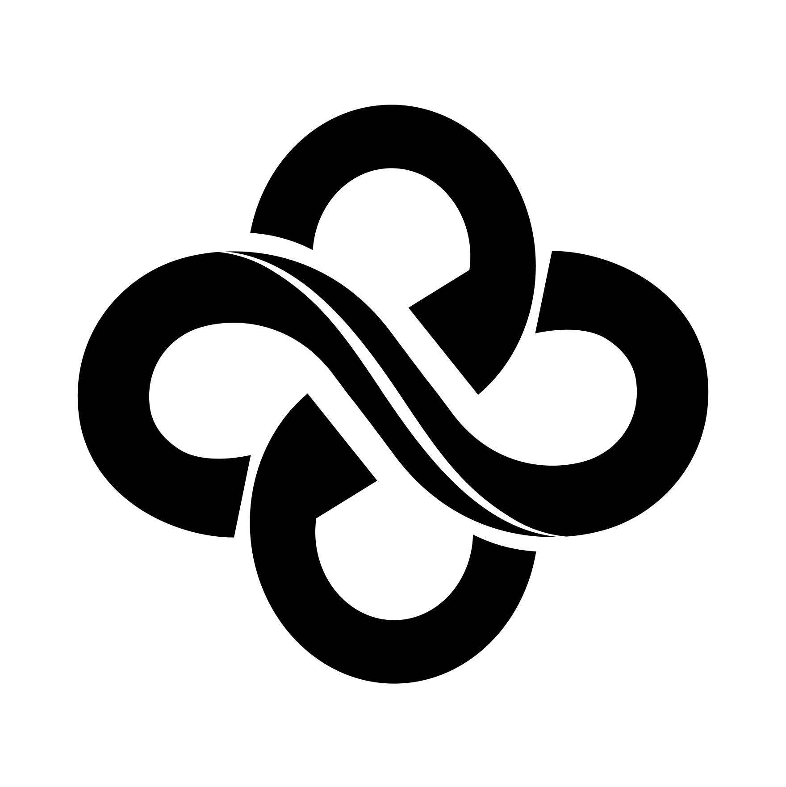
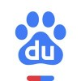
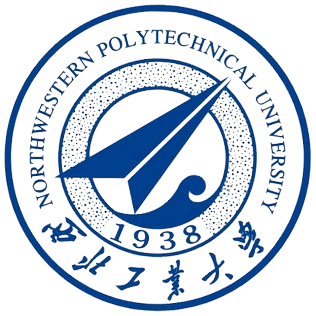
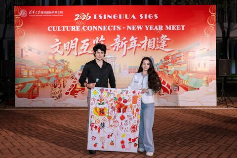

تفاصيل المشروع
تفاصيل المشروعjak.ma
المؤسس · المنتج والتطويربنيت منصة تحوّل طلبات الخدمات بالدارجة إلى اقتراحات لحرفيين مناسبين.
170 اختبارًا لمحرك المطابقة ببيانات اختبار ثابتة
استكشف المشروعأبني وكلاء ذكاء اصطناعي وسير عمل للمهام التي ينجزها الناس يدويًا، ثم أختبر مدى نجاحها.
من المغرب، وأقيم في شنتشن.
مدير منتجات نشر الذكاء الاصطناعي.


MetaGPT / Atomsنشر الذكاء الاصطناعي
Baiduعمل حر · ERNIEسوق خدمات، وبوابة مدرسية، ورفيق بالذكاء الاصطناعي.
مشكلات مختلفة، ودوري في كل مشروع.
تفاصيل المشروعبنيت منصة تحوّل طلبات الخدمات بالدارجة إلى اقتراحات لحرفيين مناسبين.
170 اختبارًا لمحرك المطابقة ببيانات اختبار ثابتة
استكشف المشروع تفاصيل المشروع
تفاصيل المشروعبنيت بوابة مدرسية للدروس والاختبارات ومتابعة التقدم والشغل اليومي للمدرسة.
الجائزة الأولى + أفضل ملكية فكرية للذكاء الاصطناعي · تسينغهوا
استكشف المشروع تفاصيل المشروع
تفاصيل المشروعقدت جانب المنتج في رفيق ذكي للأطفال بناه فريقنا باستخدام ERNIE.
فريقنا: الجائزة الثالثة · هاكاثون بايدو ERNIE الوطني
استكشف المشروعأعمال نالت التقدير في تسينغهوا وبايدو.
جوائز الفريق، مع توضيح دوري.
مسار العتاد · RedFox
قدت جانب المنتج في الرفيق الذكي اللي بنيناه مع الفريق.
Tsinghua AIID × NetDragon · School OS
بنيت School OS وحدي. وفاز أيضاً بجائزة Best AI IP.
Tsinghua SIGS · Sino Univ
قدت فريقنا المكوّن من ستة، من الفكرة إلى بناء المنتج.
توثيق مشاريع AIID
بنيت الموقع اللي يوثّق شغلنا وقصص مشاريعنا.
وكمان: منحة CSC الكاملة في تسينغهوا، ومنحة رئيس جامعة NPU للبكالوريوس.
معظم كود الشركات يبقى سريًا بموجب اتفاقيات السرية. هذه مشروعاتي الشخصية وأعمال يمكنني مشاركتها علنًا.
لا توجد نتائج. جرّب كلمة أخرى أو اختر كل الأعمال.
من الرؤية الحاسوبية إلى منتجات الذكاء الاصطناعي. تتداخل الدراسة والعمل؛ افتح كل تجربة لمعرفة المهام والمساهمات والأدلة.
LinkedIn
Northwestern Polytechnical Universityبكالوريوس علوم الحاسوب
أنا سامي، من المغرب، وأدرس الذكاء الاصطناعي وتصميم الابتكار في تسينغهوا SIGS. أحب العمل على المشكلة كاملة: ما يحتاجه الناس، وما يجب بناؤه، وكيف نعرف أنه يفيدهم.
قادني ذلك من الرؤية الحاسوبية وأنظمة التصنيع إلى الوكلاء والتقييم وبناء منتجاتي الخاصة. أعمل بالعربية والدارجة والإنجليزية والفرنسية، وأتحدث الماندرين بمستوى محادثة.
اقرأ عن بحثي